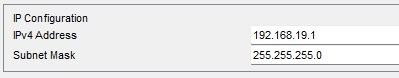
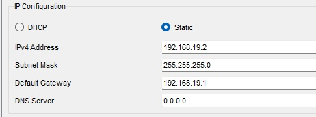
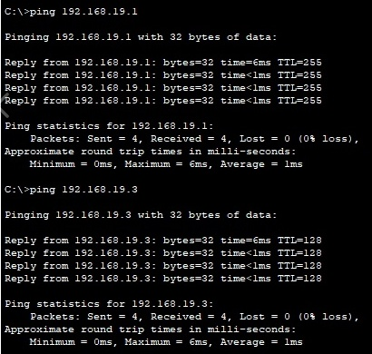

1. Создание топологии сети

Собрана базовая сеть из:
- Роутер Sedov (2911)
- Коммутатор Switch0 (2960)
- 2 компьютера: PC0 и PC1
💡 Представьте: роутер - это главная почта, коммутатор - почтовое отделение, компьютеры - дома жителей
2. Настройка IP-адресов

Роутер: 192.168.15.1

PC0: 192.168.15.2
Важно! Третий октет (19) - мой номер в группе
// Настройка роутера: Router> enable Router# configure terminal Router(config)# hostname Sedov Sedov(config)# interface GigabitEthernet0/0 Sedov(config-if)# ip address 192.168.15.1 255.255.255.0 Sedov(config-if)# no shutdown
3. Проверка связи
Успешный ping между устройствами означает:
- Устройства правильно настроены
- Сеть работает корректно
- Пакеты доходят до адресата
💡 Ping - это как крикнуть "Эй!" в коридоре и получить ответ "Я здесь!"
Выводы
✅ Что получилось:
- Успешно настроена локальная сеть
- Все устройства видят друг друга
- IP-адреса соответствуют требованиям (третий октет = 19)
⚠️ Сложности:
- Первоначально забыл команду "no shutdown" - порт был выключен
- Ошибка в маске подсети 255.255.255.0 → исправлено
Эта работа помогла понять основы настройки сетевого оборудования и важность точного следования инструкциям.